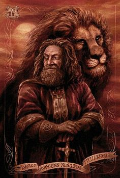

Sir Nicholas

Fantasma de la casa Gryffindor
También conocido como "Nick casi decapitado"
Grodic Gryffindor

Es una de las cuatro casas del Colegio Hogwarts de Magia y Hechicería, fundada por Godric Gryffindor. Su animal emblemático es el león y sus colores son el rojo escarlata y el dorado. Minerva McGonagall es la más reciente jefa de la casa. Sir Nicholas de Mimsy-Porpington también conocido como "Nick Casi Decapitado" es el fantasma de la casa. Las principales características de los Gryffindor son el coraje y la caballerosidad.
El elemento de Gryffindor es el fuego, ya que se lo asocia al valor y coraje de esta casa. Además, el fuego simboliza el honor en variadas ocasiones, lo cual también puede aplicar para Gryffindor.
Cada casa de Hogwarts posee un equipo de Quidditch para competir por la Copa de Quidditch cada año. El equipo de Quidditch de Gryffindor va vestido de color escarlata.
La sala común de Gryffindor está localizada en la Torre de Gryffindor, la entrada está localizada en el séptimo piso y está custodiada por el retrato de la Dama Gorda, que utiliza un vestido rosa. Ella permite la entrada solamente si la clave es la correcta (cambia regularmente). Tras ella se encuentra una gran sala llena de grandes armarios, mesas, y un pizarrón donde los estudiantes encuentran noticias, anuncios, avisos de pérdida, etc. Una ventana mira hacia afuera, a los terrenos del castillo, y una gran chimenea domina la pared. Es muy reconfortante y los estudiantes de Gryffindor se reúnen para estudiar, celebrar o relajarse.
La sala común es donde usualmente toman parte las fiestas de celebración luego de una victoria de Gryffindor en el Quidditch, o cuando Harry Potter completaba exitosamente una etapa del Torneo de los Tres Magos. Aquí se dio lugar el primer beso entre Harry y Ginny después de la victoria en Quidditch en 1997. La chimenea fue usada en varias ocasiones por Sirius Black para comunicarse con Harry mientras huía del Ministerio de Magia.
Existen dos escaleras, cada una dirige al dormitorio de los hombres y las mujeres respectivamente. Las escaleras de los dormitorios de las chicas están encantados para convertirse en un tobogán si un chico intenta subir por ellas, esto no pasa en las otras escaleras, puesto que se entendió que las chicas eran más de fiar que los chicos, por lo que Hermione podía subir al dormitorio de los chicos